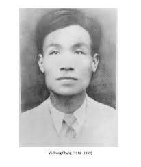

Vũ Trọng Phụng sinh năm 1912 và mất năm 1939, quê ở lang Hảo (Bần Yên Nhân), huyện Mỹ Hào, tỉnh Hưng Yên, nhưng ông sinh ra, lớn lên và mất ở Hà Nội.
Mồ côi cha từ thuở ấu thơ, gia đình nghèo, Vũ Trọng Phụng được bà mẹ tần tảo nuôi cho ăn học. Ông viết văn sớm, có truyện đăng báo từ 1930. Vũ Trọng Phụng viết nhiều thể loại nhưng nổi tiếng trên hai lĩnh vực phóng sự và tiểu thuyết.
Vào những nắm 30 của thế kỷ này, cùng với sự phat triển mạnh mẽ của báo chí, một thể văn mới ra đời: thể phóng sự. Hàng loạt tên tuổi được chú ý nhờ gắn bó với thể văn này: Tam Lang, Vũ Trọng Phụng, Trọng Lang, Vũ Bằng, Ngô Tất Tố, Nguyễn Đình Lạp, Phi Vân... (Nguyên Hồng, Nguyễn Tuân cũng có viết phóng sự). Trong số những cây bút ấy, nổi trội hẳn lên là Vũ Trọng Phụng. Vì thế công chúng đương thời đã tặng ông danh hiệu: "ông vua phóng ự đất Bắc".
Những tác phẩm chính:
+ Phóng sự: Cạm bẫy người (1933), viết về nạn cờ bạc bịp ở Hà Nội; Kĩ nghệ lấy Tây (1934), viết về cái nghề lấy Tây để nuôi thân; Cơm thầy cơm cô (1936), viết về cảnh đời những người đi ở.
+ Tiểu thuyết: Giông Tố (1936), Vỡ Đê (1936), Trúng Số Độc Đắc (1938)... trong đó tiểu thuyết trào phúng Số Đỏ là một sáng tạo nghệ thuật độc đáo và đặc sắc hơn cả.
Vũ Trọng Phụng có lối thuật kể thật là hóm hỉnh và có duyên. Nhưng tiếng cười vừa dứt, dư vị để lại sao mà cay đắng, chua chát! Vì sao mà những người đàn bà vốn lương thiện, thậm chí từng có một thời thanh xuân đầy mộng ước kia lại đến nông nổi phải làm cái "nghề" mà chính họ cũng thấy là đáng khinh, là bỏ đi này? Thực chất đây là một thứ mãi dâm mạt hạng: làm "điếm" kiêm đầy tớ có thời hạn cho những tên lính viễn chinh dâm ô, hung dữ, liều lĩnh và thường là nhưng con sâu rượu thô bỉ. Mà cái "nghề" này có thể làm mãi được sao? Lại còn những đứa con lai đẻ ra mọt cách bất đắc dĩ? Cho nên đằng sau cái "kỹ nghệ" quái thai kia là biết bao cuộc đời lỡ dỡ, biết bao tâm trạng tủi nhục, biết bao số phận tối tăm của những người đàn bà một nước thuộc địa bị đẩy tới bước đường cùng.
Trong "Cơm thầy cơm cô", Vũ Trọng Phụng viết: "người phu xe biết hết mọi sự độc ác của loài người hơn là một học giả", "một kẻ đi ở (...) biết rõ những tính tình của loài người hơn là một văn sĩ tả chân".
Ngòi bút phóng sự Vũ Trọng Phụng chính là đã quan sát, đã thuật kể bằng con mắt và tấm lòng của những người phu xe ấy, của những người đi ở ấỵ
Tuy nổi tiếng, nhưng ngòi bút của Vũ Trọng Phụng không đủ nuôi gia đình. Ngày 18 tháng 10 năm 1939, Vũ Trọng Phụng mất trong cảnh túng quẫn vì bệnh lao phổi quá nặng, lúc mới 27 tuổi.